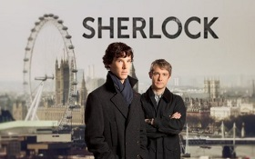

Home
About Me
Tv Shows and Movies
Geek Calendar
|
|
Sherlock

Sherlock is a British television crime drama that presents a contemporary adaptation
of Sir Arthur Conan Doyle's Sherlock Holmes detective stories.Sherlock depicts "consulting detective" Holmes, assisting
the Metropolitan Police Service, primarily Detective Inspector Greg Lestrade (Rupert Graves), in solving various crimes.
Holmes is assisted by his flatmate, Dr John Watson, who has returned from military service in Afghanistan
BACK
|